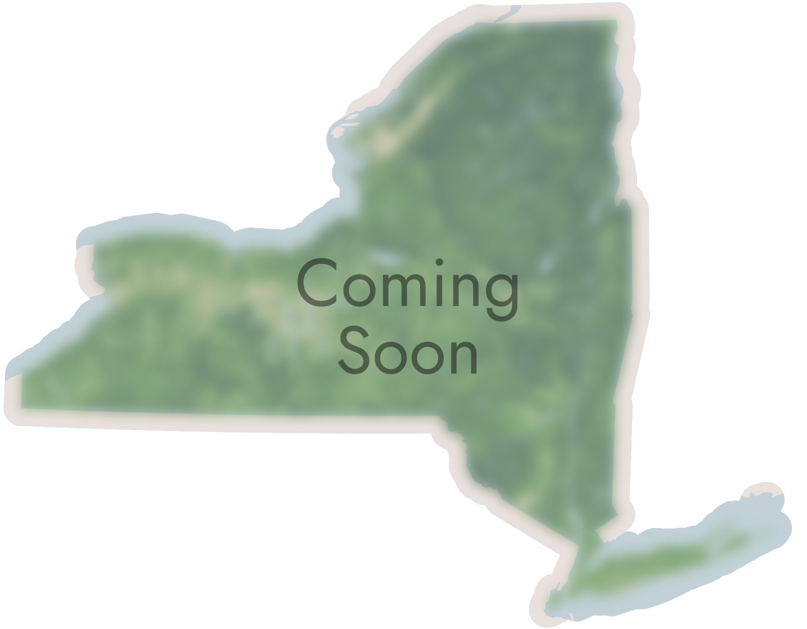
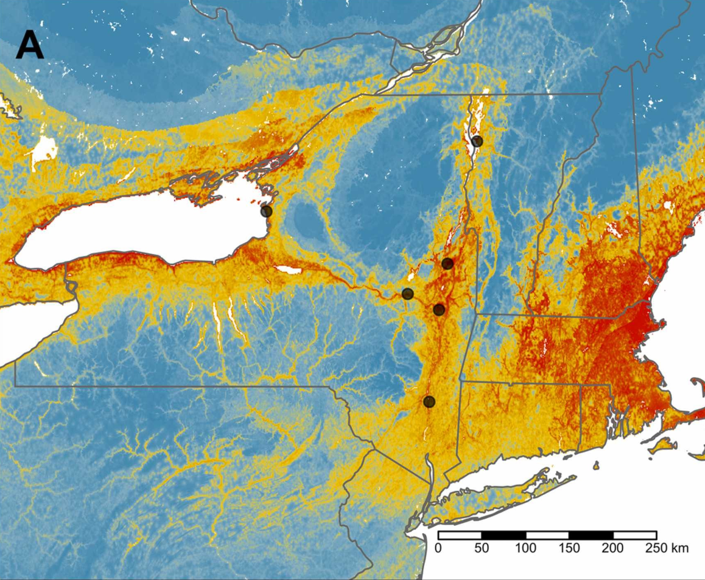
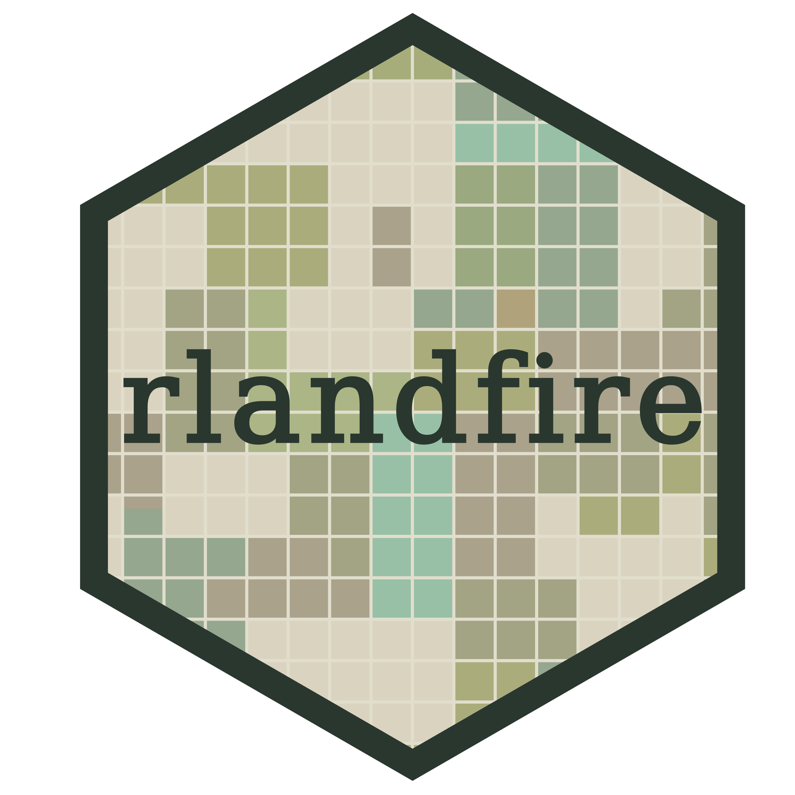

# CRAN:
install.packages("rlandfire")
# Development version:
# install.packages("devtools")
devtools::install_github("bcknr/rlandfire")Research and Current Projects
Explore some of my recent and ongoing projects.
Modeling the diversity and distribution of NYS Bees
Forecasting the impacts of global change on SW Bees
rlandfire: Interface to ‘LANDFIRE Product Service’ APIClimate-driven range shifts in a rare specialist bee
Biology of a deep nesting aster specialist
Mason Bee Edu: A native bee education program
Current Research
I use open data to model how the diversity and distributions of solitary bees may change under future climate conditions and in human-altered landscapes. By evaluating how species respond to the changing environment, I aim to provide resources for land management decision-making and biodiversity conservation.
Historically, insect populations lacked detailed, structured, and long-term surveys. The need for more data presents a challenge in prioritizing conservation action. By leveraging community science data and collection records with Species Distribution Modeling (SDM), we can better evaluate how species may respond to a suite of interacting drivers of global change.

Fine-scale Models of Bee Diversity and Habitat in New York State
The local context required for implementing effective conservation actions is often missing from global analyses of bee diversity. Using records from the Empire State Native Pollinator Survey and GBIF, we are modeling how bee species are distributed across the state of New York and what habitats may be of high conservation value.
Forecasting the Impacts of Global Change on a Bee Biodiversity Hotspot
The American Southwest is a hotspot for rapid climate change, land conversion, and bee biodiversity. Home to nearly 1/4 of US bee species, we are using Joint SDMs to evaluate how global change might impact species richness in the region and how to mitigate the threat. Click here to view my recent poster on this project.

Climate-driven range shifts in a rare specialist bee
Most specialists bees collect pollen from species within the same family of plants. Macropis nuda only collects pollens and oils from a couple of species. Our recent Global Ecology and Conservation publication explored how this species and its primary host plant might respond to the changing climate.Software

rlandfire
rlandfire is an R package for working with the 'Landscape Fire and Resource Management Planning Tools' (LANDFIRE) geospatial layers in R. The current version provides and interface to the 'LANDFIRE Product Service' API from within R.
rlandfire is now on CRAN! The package can be installed with:
Please submit all bug reports, feature requests, or questions on the GitHub repo.
I am open to contributors. If you are a LANDFIRE user and are interested in participating, please reach out!
Featured in the LANDFIRE Office Hours
Early in the development process,rlandfire was featured in the LANDFIRE Office Hours as part of a broader discussion on using LANDFIRE and R!